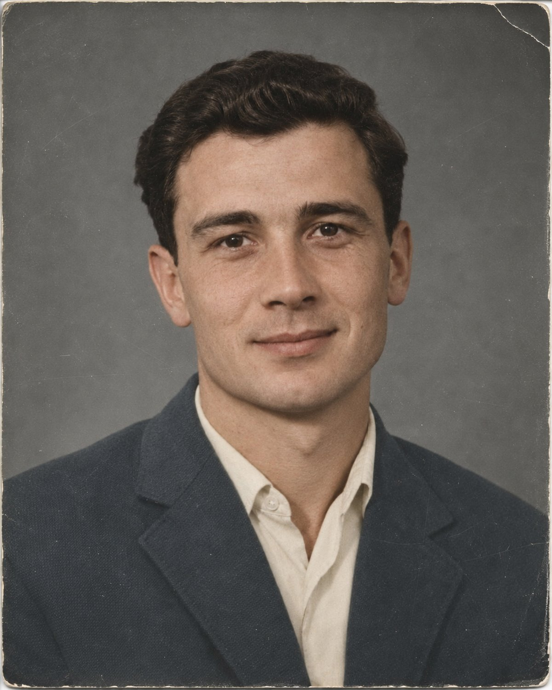
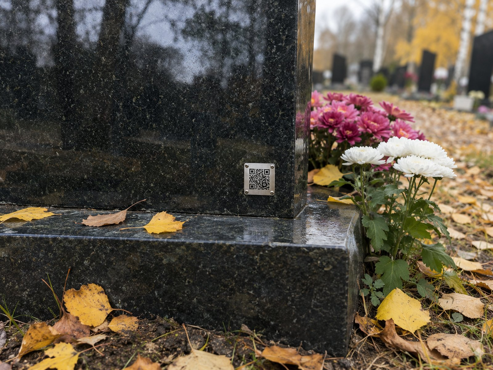

Семейный архив
Летопись
рода
Истории тех, благодаря кому мы есть. Фотографии, письма, голос и древо - в одном месте, которое останется детям.
Открыть древоПамять начинается с одного имени
Связанные одной историей
Из корней вырастаем мы.
Пять поколений. Разные судьбы. Одно продолжающееся древо.Перетаскивайте ленты. Выберите человека, чтобы увидеть его родных и открыть историю.
Потяните ленту или выберите человека
Четыре судьбы из одного древа
У каждой жизни -
свой мир.
Сохраним не только даты.
То, каким был человек.
Реставрация и цвет
Возвращаем старым фотографиям лицо и цвет
Убираем трещины, пятна и заломы, восстанавливаем резкость лица. По желанию семьи раскрашиваем снимок, сверяясь с вашими подсказками: какого цвета был пиджак, глаза, платок.
Оригинал всегда остаётся рядом с восстановленной версией. Проведите по фотографии, чтобы сравнить.
- Реставрация трещин, пятен и заломов
- Раскрашивание по подсказкам семьи
- Оживление портрета на 3-5 секунд, только по вашей просьбе


Голос и видео
Голос, который хочется услышать снова
Старые голосовые, записи с кассет и семейное видео мы чистим от шума и ставим рядом с историей. Из фотографий собираем короткий фильм-воспоминание на минуту.
«Про первый мост»
Голосовое Николая Петровича, 2016 год, 0:42
В макете звук не подключён: сюда ставится файл записи.


QR-код на памятник
Наведите камеру - и история рядом
Мы даём файл QR-кода для печати на металлической или керамической табличке. Его делает любая мастерская или наш партнёр. Ссылка постоянная, менять табличку не придётся.
- Место захоронения
- Кладбище Северное, Ульяновск
- Участок / ряд / место
- 14 / 6 / 22
- Координаты
- 54.3712, 48.5521
Что вы получаете
Память, которая останется у семьи
- Страница по постоянному адресуОткрывается с любого телефона без приложений и регистрации. Открыта для всех или по паролю.
- QR-код для табличкиВекторный файл для печати на памятник, открытку или в семейный альбом.
- PDF-книгаТа же история, свёрстанная для печати. Можно распечатать в любой типографии.
- Архив страницыАвтономная копия со всеми фото и голосом: сохраните на компьютер или флешку. Откроется даже без интернета и без нас.
Цены
Три формата под разную историю
Размещение на 3 года уже включено. Дальше 390 ₽ в год, а копия страницы в любом случае остаётся у вас.
Страница памяти
3 990 ₽
Когда хочется сохранить главное
- Один человек, до 15 фото
- Текст до 3 000 знаков по вашим фактам
- Реставрация и цвет 3 фото
- QR-код и PDF
- Готово за 3-5 дней
Основной формат
История жизни
7 900 ₽
Подробная история по главам
- Пишем по вашим голосовым или звонку, до 8 000 знаков
- До 40 фото, 10 реставраций с цветом
- Голос, видео, награды и документы
- Место захоронения на карте
- QR, PDF-книга и HTML-архив
- Два круга правок, 5-7 дней
Семейное древо
от 14 900 ₽
История рода на несколько поколений
- До 12 человек с карточками
- Интерактивное древо и переходы между родными
- Одна подробная история жизни
- Доступ для всех или по паролю
- Родные добавляют себя позже
Дополнительно: фильм-воспоминание на минуту от 4 900 ₽, металлическая QR-табличка от 1 500 ₽, ещё один человек в древо 900 ₽.
Как мы работаем
От вас - воспоминания, от нас - всё остальное
- 01Заявка
Пишете нам, о ком хотите рассказать. Подсказываем, что собрать, и называем точную цену.
- 02Материалы
Присылаете фото, сканы документов и голосовые: как вспоминается, без подготовки. Можно созвониться.
- 03Черновик
Через 5 дней показываем закрытую страницу. Вы читаете, правите факты и слова.
- 04Готово
Открываем страницу, отдаём QR, PDF-книгу и архив. Дальше её можно дополнять.
Вопросы
Что обычно спрашивают
У нас мало фотографий и почти ничего не записано
Этого достаточно. Мы задаём вопросы по памятке, а вы отвечаете голосовыми, как получится. Даже из одного фото и получаса воспоминаний складывается тёплая страница.
Кто увидит страницу?
Решаете вы. Страница может быть открытой или закрытой паролем, который вы передаёте только родным. Поисковики закрытую страницу не видят.
Что будет, если ваш сервис закроется?
У вас остаются PDF-книга и автономный архив страницы со всеми фото и записями. Они открываются на любом компьютере без интернета.
Можно ли дополнить страницу потом?
Да. Новые фото, воспоминания родных и людей в древо добавляем в любое время, мелкие правки бесплатно в первый месяц.
Вы оживляете фотографии с помощью ИИ?
Только если семья сама этого хочет. Реставрация и цвет делаются бережно, рядом всегда остаётся оригинал.
Заявка
Расскажите, о ком хотите сохранить память
Ответим в течение дня, подскажем, что собрать, и назовём точную цену. Ни к чему не обязывает.
Или напишите напрямую: Telegram, WhatsApp, телефон (контакты добавим)